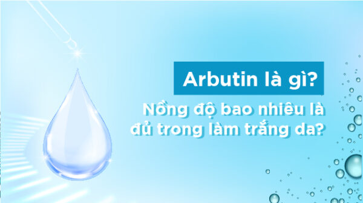

Arbutin là gì ? Nồng độ bao nhiêu là đủ trong làm trắng da

Arbutin là gì ?
Arbutin là 1 Glycoside tự nhiên của Hydroquinone. Đó chính là lý do nó có 1 số tính năng, công dụng khá tương tự với hydroquinone.
Có nghĩa là Arbutin sẽ có khả năng ức chế enzym tyrosinase làm giảm sinh tổng hợp melanin của Arbutin ở người. Chính vì đặc tính này đã dẫn đến việc sử dụng rộng rãi nó trong nhiều công thức mỹ phẩm. Như là 1 chất làm trắng da, chủ yếu là trong các sản phẩm mỹ phẩm nhật bản hoặc mỹ phẩm châu Á.
Tuy nhiên, hầu như các kết quả nghiên cứu về Arbutin sẽ không hiệu quả tuyệt đối như hydroquinone, nhưng được cái ít kích ứng, ít rủi ro hơn, phù hợp cho những bạn sợ bị bệnh mất màu da như khi sử dụng hydroquinone. Đây chính là nguyên nhân bs Hiếu chỉ khuyên dùng Arbutin, hydroquinone hầu như được quy định như thuốc. Hydroquinone không được tự ý thoa, phải có sự chỉ định của bác sĩ chuyên khoa.
Các loại Arbutin và nồng độ trong làm trắng da.
Có 2 loại Arubin trong mỹ phẩm:
Alpha-Arbutin.
Beta-Arbutin.
Alpha-Arbutin: Nồng độ sử dụng a-Arbutin an toàn cho người tiêu dùng trong các sản phẩm mỹ phẩm lên đến 2% trong kem dưỡng da mặt và 0,5% trong kem dưỡng thể.
Beta- Arbutin: có tên hóa học là 4-hydroxy-phenyl- B-D-glucopyranoside. Chất này được sử dụng như một thành phần hóa học đơn lẻ và như một thành phần chiết xuất từ thực vật. Loại Arbutin này dường như phân hủy thành Hydroquinone trên da, thế nên nó khá nguy hiểm trong việc sử dụng mỹ phẩm.
Tuy nhiên SCCS vẫn coi việc sử dụng beta-arbutin là an toàn cho người tiêu dùng trong các sản phẩm mỹ phẩm với nồng độ lên đến 7% trong kem mặt với điều kiện là sự nhiễm Hydroquinone trong mỹ phẩm công thức vẫn dưới 1ppm. Được sử dụng để điều trị tình trạng tăng sắc tố, nám, làm đều màu da.
Cho dù Alpha hay Beta-Arbutin thì đều là dạng triết xuất tự nhiên của Hydroquinone, cho nên sẽ không phù hợp cho những phụ nữ mang thai, cho con bú, hoặc chuẩn bị có thai. Vì vậy cũng không được sử dụng Arbutin hoặc Hydroquinone tự do trong khi mang thai hoặc cho con bú.
So với Beta-Arbutin thì Alpha-Arbutin có tính ổn định cao và có công dụng cao gấp nhiều lần ở cùng nồng độ cho nên các sản phẩm khi quảng cáo người ta thường dùng công dụng của alpha-arbutin ra để quảng cáo về sản phẩm, nhưng thực chất, nhiều sản phẩm chỉ chứa Beta-Arbutin. Beta-Arbutin rất dễ gây kích ứng, nên mọi người nên kiểm tra kĩ trước khi sử dụng Arbutin.